MY LAB / RUNTIME CONTROLLER
PROJECT GITHUB REPOSITORYSee Runtime Controller in action
Watch the Runtime Controller walkthrough. Open the video in a new tab.
What I built, and why
Runtime Controller turns visual feedback into project-specific coding work. A developer draws a region on a blank canvas or selects an element in a running local application, describes the change, and saves it as a work item. The controller sends selected items to Codex, keeps the run history, and brings the result back into the same interface.
The problem is the gap between seeing a UI problem and explaining it precisely to a coding agent. “Move this panel” loses its meaning when the agent cannot see which panel, where it sits, or how large the viewport was. This project carries that context with the request: coordinates, viewport dimensions and, for an existing element, its selector, text, HTML and selected styles.
It also gives the work a place to live. Instructions survive a browser refresh, each run keeps its own copy of the inputs, and completed work stays available in history. Project settings, installation progress and recorded usage are visible alongside the work.
The stack is Angular for the interface, NestJS for the local API, Playwright for controlled capture windows, the Codex app-server for agent execution, and Python for installation and portable project tooling. Project state is stored in JSON files; there is no application database or cloud queue in this implementation.
The architecture, from the developer’s point of view
Think of the NestJS process as the owner of one selected project. The UI asks it to capture, save or execute work. The process keeps the project’s store, agent runtime, capture browsers and installation worker together in one session. Changing the project replaces that session rather than just changing a label in the UI.
From visual intent to a saved result
Follow the solid arrows down through the request. The side branches show where the work is saved and where Codex changes application files. The UI reads saved state back; a developer still reviews the changes and checks.

Production serves the compiled Angular application from NestJS. During development, the documented API port is 4310 and the frontend port is 4311. The controller normally runs on the unprivileged loopback address 127.0.0.1:10101. A separate, optional host helper provides the custom hostname and port described in the repository README.
| Component | Responsibility | Useful source entry point |
|---|---|---|
| Angular application | Selection, drafts, confirmation, polling, terminal view and history. | frontend/src/app.ts, app.html |
| HTTP boundary | Routes, Host/Origin checks, mutation token and project identity checks. | backend/routing.ts |
| Project session | Switching, token rotation and cleanup of the old project’s resources. | backend/projects.ts |
| Persistence | Ownership lock, input validation, state and bounded activity history. | backend/store.ts, state-file.ts |
| Agent runtime | Run snapshots, prompt assembly, lifecycle, approvals and usage. | backend/runtime.ts |
| Codex transport | Subprocess ownership, line-delimited RPC, correlation and disconnect handling. | backend/codex.ts |
| Visual capture | Drawing window, local-page overlay and bounded element evidence. | backend/browser.ts, live-browser.ts, reference.ts |
| Installation and documents | Python worker lifecycle; bounded project Markdown discovery and reading. | backend/installation.ts, installer/, backend/documents.ts |
1. Give the change a precise visual reference
There are two ways to begin. A blank canvas is useful when the layout does not exist yet: draw a rectangle, give it a title and explain what belongs there. An existing local application is useful when something already needs fixing: open its URL in the controlled browser and select the relevant element.
Both paths produce an Instruction. The rectangle is recorded in CSS pixels with the viewport width and height. These numbers describe the original visual intent; the prompt tells Codex to implement a responsive layout instead of treating every measurement as a universal fixed size.
Saving a canvas instruction
The following request uses illustrative values. The server supplies the ID, timestamp and initial todo status; the client does not choose them.
POST /api/instructions
Content-Type: application/json
X-Builder-Token: <current bootstrap token>
X-Project-Id: <selected project id>
{
"title": "Make the sidebar easier to scan",
"description": "Group project actions and keep the layout usable on narrow screens.",
"rect": { "x": 24, "y": 96, "width": 280, "height": 600 },
"viewport": { "width": 1440, "height": 900 }
}Validation requires a nonblank title and description, limits them to 160 and 12,000 characters, and checks that the rectangle is finite, at least 8 × 8 pixels and inside the viewport. The store adds the instruction and records the change in the same persisted state.
What an existing-element reference adds
A live capture attaches a source object. Here is the shape with shortened, illustrative page content:
{
"kind": "element",
"url": "http://localhost:4200/dashboard",
"selector": "#project-sidebar",
"tag": "aside",
"text": "Projects Settings",
"html": "<aside id=\"project-sidebar\">Projects Settings</aside>",
"styles": { "display": "flex", "gap": "12px", "padding": "16px" },
"scroll": { "x": 0, "y": 120 }
}The controlled browser uses its own profile, accepts local target URLs and blocks top-level navigation away from the opened app’s origin. This does not block every external subresource or subframe request. The capture path omits form values and removes query strings and fragments from saved URLs. The server bounds the selector, text, HTML and supported style values; ordinary visible text can still contain sensitive information, so capture only the relevant page.
A selector is a clue to the rendered element, not a guaranteed source-file location. Codex still has to inspect the application and map the evidence back to its components. Closed shadow roots and cross-origin frames are outside this selection flow. Captured HTML and text are explicitly treated as untrusted evidence in the developer instructions.
Source: backend/store.ts, backend/reference.ts and backend/live-browser.ts.
2. Turn selected work into an execution snapshot
The developer selects pending items and confirms execution. Angular sends their IDs and any additional context. Installation must be complete first, and an active run prevents a second dispatch.
POST /api/execute
Content-Type: application/json
X-Builder-Token: <current bootstrap token>
X-Project-Id: <selected project id>
{
"instructionIds": ["instruction-example-1"],
"prompt": "Follow the existing spacing and typography. Verify mobile layout."
}Runtime.execute() checks that the selected IDs are distinct and refer to saved todo items. The API can also execute all pending items when instructionIds is omitted. It preserves the saved order and copies the selected instructions and settings into a new run. Later settings changes therefore affect future runs, not the request already in flight.
const run: Run = {
id: randomUUID(),
status: 'starting',
settings: Object.freeze(structuredClone(this.store.state.settings)),
instructionIds: instructions.map((item) => item.id),
instructions: structuredClone(instructions),
createdAt: new Date().toISOString(),
prompt: value?.prompt || '',
output: '',
};
for (const item of instructions) item.status = 'running';
this.store.state.runs.unshift(run);
this.store.event('run.queued', `Queued ${instructions.length} visual instruction(s)`, run.id);The run is saved before asynchronous dispatch begins. The HTTP response is the run record, not a final coding result. The browser subsequently follows its status through state polling.
Protecting the selected project
GET /api/bootstrap supplies initial state and the current mutation token. Mutations send that token in X-Builder-Token and the selected identity in X-Project-Id. Host, Origin and cross-site request checks run before route dispatch. Switching projects rotates the token, closes the old session’s resources, and returns a new bootstrap response. Active execution or installation prevents switching.
Angular also clears project-specific drafts and rejects results from obsolete project epochs. This matters when a slow request finishes after a switch: it must not put the previous project’s data into the new project’s screen.
3. Start Codex and send the actual task
The browser never launches Codex directly. The backend creates a CodexTransport bound to the selected project. It starts codex app-server --listen stdio:// with explicit configuration overrides and the project as its working directory. Native authentication stays in the environment; the controller does not copy credentials into project state.
From a local process to one model turn
- Initialize and inspectStart app-server, send initialize / initialized, then config/read. Discover inherited integrations.
- Restart and verifyDisable inherited MCP/plugins and supported integration features. Read effective configuration again; fail if isolation cannot be verified.
- Create thread and turnthread/start supplies policy and developer instructions. turn/start supplies the saved work and additional user context.
Each run starts a fresh thread. This adapter does not resume a previous conversation or fetch history with thread/read.
Transport messages are newline-delimited JSON. Each outgoing request gets an ID and a pending promise with a timeout. Responses resolve or reject that promise by ID. Notifications go to the runtime; supported incoming approval requests take a separate request/response path. The transport does not automatically retry a potentially side-effecting request.
The thread sets the working boundary
The following is an abbreviated request shape, with an illustrative project path. The implementation also sets explicit network and temporary-directory options. A model is included only when the project settings specify one.
{
"id": "rpc-example-1",
"method": "thread/start",
"params": {
"cwd": "/workspace/example-app",
"approvalPolicy": "never",
"approvalsReviewer": "user",
"sandbox": "workspace-write",
"config": {
"sandbox_workspace_write.network_access": false,
"sandbox_read_only.network_access": false,
"sandbox_workspace_write.writable_roots": [],
"sandbox_workspace_write.exclude_tmpdir_env_var": true,
"sandbox_workspace_write.exclude_slash_tmp": true
},
"developerInstructions": "[project-scoped instructions; abbreviated here]"
}
}The full developer instructions tell the agent to follow the project’s AGENTS.md and .codex/visual-builder/AGENTS.md, preserve unrelated changes, interpret visual references responsively, verify relevant behavior, and report actual checks and blockers. They also tell it not to edit the controller’s state file or ownership lock.
The turn carries the work
This source excerpt shows where UI data becomes the model input. The saved instruction snapshot is serialized into the prompt; the original HTTP payload is not forwarded unchanged.
const prompt = [
'Implement these saved visual instructions in this project.',
`Project: ${this.store.root}`,
`Additional user context: ${run.prompt}`,
'Visual instructions (CSS pixels with viewport reference):',
JSON.stringify(run.instructions, null, 2),
].join('\n');
const result = await transport.request('turn/start', {
...requestSettings,
threadId: run.threadId,
input: [{ type: 'text', text: prompt }],
sandboxPolicy: sandboxPolicy(settings, this.store.root),
...(settings.reasoningEffort ? { effort: settings.reasoningEffort } : {}),
});
run.turnId = result.turn.id;
this.store.save();The thread/start response supplies thread.id; turn/start supplies turn.id. These connect later notifications to the run. The model input contains text and serialized evidence, with no screenshot attachment. There is no required JSON output schema for the agent’s final explanation. Coding happens through Codex’s own workspace operations, while the controller receives lifecycle messages and agent text.
Source: backend/codex.ts, backend/runtime.ts and backend/settings.ts. This describes the repository adapter, not a guarantee that every installed Codex version supports its assumptions.
4. Process the result without confusing “finished” with “verified”
Once a run owns a thread, the runtime ignores ordinary notices from other thread IDs. It handles completed agent messages, item lifecycle events, usage reports and the terminal turn status. An illustrative completed message looks like this:
{
"method": "item/completed",
"params": {
"threadId": "thread-example-1",
"item": {
"type": "agentMessage",
"text": "Updated the sidebar. Build passed; browser verification was not run."
}
}
}The text above demonstrates the data shape; it is not a test result from this review. The runtime appends message text to run.output and keeps its last 60,000 characters:
if (method === 'item/completed' && params.item?.type === 'agentMessage') {
run.output = (run.output + params.item.text + '\n').slice(-60000);
this.store.save();
}| Incoming event | Controller action |
|---|---|
turn/started | Save the turn ID. |
item/started, item/completed | Save a short activity description such as “commandExecution completed”; completed agent messages also update output. |
thread/tokenUsage/updated | Validate cumulative totals and retain the greatest total for the run. |
turn/completed | Map completed to completed, interrupted to cancelled, and other endings to failed. Save finish time and any error. |
error | Record a runtime error event. This alone is not treated as terminal completion. |
| Unexpected subprocess disconnect | Mark an active run interrupted; the execution outcome may be unknown. |
Finishing a successful turn marks the selected instructions completed. Other terminal outcomes mark those instructions failed. The UI can now separate completed work from unresolved work. This is a lifecycle decision, not a code-review verdict: the controller does not independently parse test evidence, approve a diff, or prove that the requested UI is correct.
The terminal panel displays saved agent output, or activity summaries while there is no output. It updates through HTTP polling, not WebSockets or token-by-token streaming. Text deltas, full tool stdout, generated diffs and command transcripts are not persisted by this adapter.
5. Save the record, then read it back
There are two kinds of output to keep separate. The changed application files live in the selected project. The controller’s record of the work lives under that project’s .codex directory. Refreshing the UI reads that record; it does not ask the model to reconstruct what happened.
.codex/
visual-builder/
state.json # Settings, instructions, run snapshots and activity
owner.lock # Process ID and unique ownership ID
AGENTS.md # Guidance for controller-owned work
runtime-controller/
... # Installer state, receipt, conflicts and project registry
memory/ # Explicit project-owned retained notesThe persisted data model
These are the central fields from backend/types.ts, compacted for reading. Optional fields appear as the run progresses.
type Instruction = {
id: string;
title: string;
description: string;
rect: { x: number; y: number; width: number; height: number };
viewport: { width: number; height: number };
source?: ElementSource;
status: 'todo' | 'running' | 'completed' | 'failed';
createdAt: string;
};
type Run = {
id: string;
status: 'starting' | 'running' | 'completed' | 'failed'
| 'interrupted' | 'cancelled';
instructionIds: string[];
instructions: Instruction[]; // Snapshot at dispatch, not live instruction state
settings?: Settings;
prompt: string; // Additional user context, not the assembled prompt
output: string;
threadId?: string;
turnId?: string;
tokenUsage?: TokenUsage;
createdAt: string;
finishedAt?: string;
error?: string;
};
type Activity = {
id: string; time: string; type: string; message: string; runId?: string;
};
type State = {
version: 1;
settings: Settings;
instructions: Instruction[];
runs: Run[];
events: Activity[];
};The copy in run.instructions preserves what was selected at dispatch, including its then-current status. The main state.instructions array carries the current work-item status. run.prompt stores the additional user context; the complete model prompt is assembled from that context, the project path and the snapshot.
Atomic replacement, with one process owning the project
ProjectStore canonicalizes the root, checks state paths, and exclusively creates an owner.lock. It rejects unsafe state files and refuses a second owner. Each save writes formatted JSON to a uniquely named temporary file, closes it, and renames it over state.json. Failed temporary writes are cleaned up. This avoids exposing a partially written JSON file; it is not a database transaction log or a backup system, and there is no explicit fsync-based power-loss guarantee.
On startup, saved runs left in starting or running become interrupted, with a message to inspect project changes before retrying. A stale ownership lock requires checking that the former process is dead before removal. The application does not silently replay the task.
Retrieval is a local state read
The API builds GET /api/state from the active session. It returns project identity, registered projects, instructions, runs, events, settings, pending approvals, installation status, controller identity, health, runtime status and browser-open flags. The mutation token is returned by bootstrap, not each state response.
Angular refreshes every two seconds. History and Observability are views of these returned records, rather than separate database queries. There is no paginated run-history endpoint in this implementation. Events and output are bounded, but run and instruction collections can continue growing, which makes full-state polling and whole-file saves a practical scaling limit.
Source: backend/store.ts, backend/state-file.ts, backend/types.ts, backend/routing.ts and frontend/src/app.ts.
Logs and token usage: what is actually collected
The Observability page answers operational questions: is the server alive, is the CLI available, is the capture browser installed, and what happened during this project’s runs? It combines current health information with persisted activity and token totals. CLI availability checks the executable; it does not prove authentication or a successful model request.
| Layer | Collected and stored | Important boundary |
|---|---|---|
| Controller activity | UUID, ISO timestamp, event type, message and optional run ID in state.events. | Last 1,000 events; each message limited to 4,000 characters. Saved as part of state.json. |
| Agent output | Completed agent-message text in run.output. | Last 60,000 characters per run. No full stdout or diff archive. |
| Transport diagnostics | Generic malformed-line and rejected-request notices; lifecycle failures reflected in the run. | Subprocess stderr is drained without persistence. Raw protocol/configuration is not archived. |
| Runtime health | Uptime, RSS memory, project/CLI/browser checks in API state. | A current snapshot, not a historical metrics time series. |
| Portable activity logger | Explicit workflow milestone entries through the installed Python logger. | A separate project tool; not automatic ingestion into the controller’s event array. |
For example, dispatch records run.queued and run.started; item notices create item.started and item.completed; finishing records run.completed, run.failed or another terminal status. The associated runId lets the interface connect an event with the correct execution.
event(type: string, message: string, runId?: string) {
this.state.events.push({
id: randomUUID(),
time: new Date().toISOString(),
type,
message: message.slice(0, 4000),
runId,
});
this.state.events = this.state.events.slice(-1000);
this.save();
}Count cumulative reports once
Codex reports cumulative thread usage. Summing every notification would count earlier tokens repeatedly. The runtime requires all five fields to be nonnegative safe integers and replaces the saved report only when its totalTokens is greater. The UI then sums the saved totals of reported runs.
{
"method": "thread/tokenUsage/updated",
"params": {
"threadId": "thread-example-1",
"tokenUsage": {
"total": {
"inputTokens": 1400,
"cachedInputTokens": 400,
"outputTokens": 600,
"reasoningOutputTokens": 200,
"totalTokens": 2000
}
}
}
}A second report of 2,000 is ignored; a later report of 2,400 replaces it. Cached input and reasoning output are reported dimensions, not extra values to add to the total. A run without a valid report remains Unreported, not zero. These are recorded controller-run totals, not account-wide billing. The handler can accept a late usage report for a terminal run, but closing the transport at completion means it cannot guarantee a final report will arrive.
The portable logger writes UTC timestamped lines to .codex/logs/logs__{agent}__{year}.log. Each line contains a level and an optional project prefix. It appends with a thread lock and a process file lock, then flushes and fsyncs the file. Those yearly text files are separate from state.json; the Observability API does not ingest them.
That portable logger exposes write_activity(agent, event_message, project="") writes explicit milestones for project tooling. Keeping these layers distinct makes it possible to explain what was observed without inventing a full tracing platform.
Permissions, cancellation and recovery
Settings are project-local and validated as a complete object. Defaults are workspace-write, approval policy never, command network access disabled, and blank model/reasoning selections. Blank values mean the controller omits those optional request fields; they do not name a particular model.
With a supported approval policy, command and file-change requests can appear in the UI. Pending approvals are held in memory and included in API state. POST /api/approvals/:id accepts only {"decision":"accept"} or {"decision":"decline"}. Ownership checks tie the request to the active run, thread and turn; decisions are one-shot and their outcome is logged. File-change approval descriptions do not contain a supplied diff.
Unsupported interaction methods, requests for a broader grant root, and approvals incompatible with policy are rejected. Full-access settings explicitly require network access to be enabled. The local request checks are appropriate to this trusted single-user controller; they are not a hosted multi-user authentication system.
| Situation | What the application does | What to inspect next |
|---|---|---|
| Invalid selection or unfinished installation | Reject the dispatch before starting agent work. | Pending items and Installation page. |
| Failure before a thread exists | Mark the run failed. | Saved error, CLI setup and supported configuration. |
| Failure after a thread exists or unexpected disconnect | Mark the active run interrupted. | Workspace changes; the outcome may be unknown. |
| Developer cancels | Attempt turn/interrupt when IDs exist, then close the owned transport. | Partial edits. Cancellation does not roll them back. |
| Controller restarts after unfinished work | Mark saved active runs interrupted; do not replay them. | Ownership lock, history and files before retrying. |
| Old browser tab writes after project switch | Reject its stale token/project context. | Refresh bootstrap and confirm the selected project. |
Installation, project memory and work documents
The Python installer gives another project the reusable runtime files without copying the developer’s private Codex environment. It installs the portable template into .codex and discoverable skills into .agents/skills, checks prerequisites and browser availability, and persists step progress and a receipt under .codex/runtime-controller.
Reinstall updates unchanged managed files and preserves edits as conflicts. Reset removes only unchanged managed files; work records, memory and user edits remain. Existing root instructions are preserved, with bridge conflicts surfaced for review. The controller exposes this progress through Installation and blocks execution until setup is complete.
The installed project launcher starts or finds the controller, then launches Codex in that project. It preserves native CODEX_HOME and authentication; portable project tools use RUNTIME_CONTROLLER_CODEX_HOME. This is an explicit launcher, not an automatic IDE startup hook.
Project memory is explicit retention through a separate CLI, not a copy of native Codex memory or an automatic summary of every run. A developer can add an authorized note, search it later, and list retained notes. The notes live under .codex/runtime-controller/memory/; normal GET /api/state is not a memory-search API.
The memory file is notes.json, shaped as {version: 1, notes: [{id, text, created_at}]}. Search uses a case-insensitive substring match. The index allows up to 1,000 notes, 8,000 characters per note and 4 MiB overall. It uses locking and atomic replacement; notes are not automatically inserted into the visual-run prompt.
Installer progress is separate too: NestJS starts python3 -m installer with the project and action, then reads .codex/runtime-controller/install.json. Its UI-facing shape includes status, progress, steps, and optional error/version. Each step has an ID, label, status and optional message. Worker stdout/stderr are drained; the persisted progress record is the retrieval source.
Work Docs provides a different retrieval path: GET /api/documents lists eligible project Markdown files, and GET /api/documents/content?path=… retrieves one. Discovery covers the project root, docs/, plans/, .codex/tasks/ and .codex/plans/, excluding symlinks and dependency folders. Traversal is bounded to 5,000 entries and depth 8, with at most 500 documents and a 512 KiB file limit.
The reader escapes source HTML and formats common Markdown. Mermaid diagrams render locally under strict constraints, retaining readable source on errors. This lets plans and development notes written during agent work become discoverable after a refresh, but the file list does not assign agent authorship.
Source: installer/ARCHITECTURE.md, runtime-template/README.md, backend/installation.ts, backend/documents.ts, frontend/src/markdown.ts and frontend/src/mermaid.ts.
Working on the project
Start with the responsibility that owns the behavior. A wrong rectangle belongs in capture/validation. A stale project display belongs in session or frontend epoch handling. Missing output belongs in notification handling. A partially written state file belongs in persistence. This keeps fixes close to the relevant boundary.
The repository documents these commands for development. They are reference commands, not claims that this article review ran the builder’s suites:
npm run build:api
npm start -- --port 4310 --no-open
# Separate terminal:
npm --prefix frontend start
# Relevant verification commands:
npm test
npm run test:installer
npm run build
npm run test:ui
npm run format:backend:check
python3 scripts/export-runtime-template.py --checkBackend tests use disposable projects and synthetic transports. Installer tests exercise file preservation and repeat installation. Browser suites cover UI flows. These layers are useful evidence, but synthetic transport tests cannot prove a real model run, and automated browser checks are separate from native Computer Use verification.
A useful end-to-end validation uses a disposable application: save an instruction, confirm the stored geometry, execute against an authorized test setup, inspect the changed files, run the application’s checks, then reload history and compare the recorded outcome. Preserve the distinction between a completed turn, passing tests and a visually correct change.
Where the current design stops
The current implementation is a local, single-project-at-a-time controller. It does not provide multi-user authorization, a distributed job queue, concurrent runs in one session, automatic rollback, durable pending approvals, a full transcript archive, or a guarantee that agent claims are correct. Whole-state polling and JSON replacement keep the design understandable, with clear limits as history grows.
Those boundaries are part of the development story: visual intent becomes a saved instruction; that instruction becomes a scoped agent request; the resulting files and execution record remain available for a human to inspect.